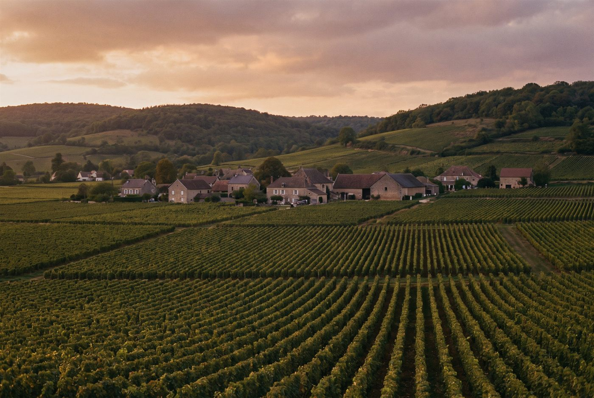

Les domaines · Côte de Beaune · Dezize-lès-Maranges
Dezize-lès-Maranges · Côte de Beaune
Domaine Nicolas Perrault
Des maranges premiers crus qui allient la finesse du terroir à l'éclat du fruit.

Ambiance de Dezize-lès-Maranges
À la pointe sud de la Côte de Beaune, le domaine familial fondé par le grand-père de Nicolas Perrault est aujourd'hui conduit par la troisième génération. Ancien chef de culture au Château de la Crée, à Santenay, Nicolas reprend les vignes en 2012 avec l'objectif de les certifier en agriculture biologique, ce qui est aujourd'hui chose faite, tout en s'inspirant des préparations de la biodynamie. Six hectares répartis sur neuf appellations, deux tiers de pinot noir et un tiers de chardonnay, sont vendangés à la main et triés sur table.
Blancs
- Cépage · ChardonnayLe blanc du domaine, au nez grillé et épicé, à la bouche volumineuse.
Rouges
- Cépage · Pinot NoirParcelle phare du domaine, au fruit frais de cassis et de framboise, aux tanins fins.
- Cépage · Pinot NoirSols riches en calcaire; un pinot noir de corps moyen, à la trame fraîche et aux tanins soyeux.
- Cépage · Pinot NoirProfil épicé et fruité, aux tanins ronds et élégants.
- Cépage · Pinot Noir
Ces cuvées vous parlent ?
Demander les disponibilités